- “I want everything in one.”
- “I like my privacy.”
- “I want to share the device in one click.”
Connected Devices · Mobile Product Design
FeelConnect App
Simplifying the way users connect, control and share Bluetooth-enabled devices.
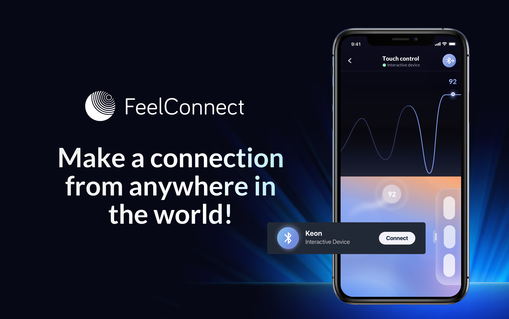
Project overview
Making a complex connected-device experience easier to use.
FeelConnect App makes it easy to connect to Bluetooth-enabled devices, control them remotely, and stream sensor data to a cloud service.
The app works with the FeelTechnology communication platform, helping users connect their devices to content and use features such as remote control, interactive video and communication.
The challenge
The product had grown around business requirements - not around the user.
The first version of the application was created around business requirements, without enough insight from end users. New functionality was then added over time, making the experience increasingly complicated.
As a result, everyday tasks became unnecessarily time-consuming, while users struggled with navigation, device onboarding and understanding how different features worked together.


Design process
User-centred design from discovery to validation.
I started with a user-centred design approach, focusing on users, their needs and the problems they experienced with the existing app.
01
Discover
- User Interviews
- Competitive Analysis
02
Ideate
- User Flow
- Information Architecture
03
Design
- Wireframes
- Prototypes
- Visual Design
04
Test
- Usability Testing
- Feedback
Tools used
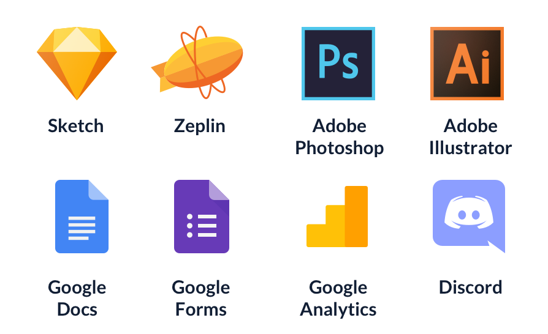
My responsibility
- Strategy
- Problem scoping
- Competitor analysis
- User interviews & surveys
- User flows
- Wireframes
- Prototyping
- Visual design
- Usability testing
01 · Discover
Understanding where the experience was breaking down.
The discovery process combined qualitative and quantitative research to understand how people used the existing application and where they experienced friction.
- Survey A questionnaire with open questions was sent to 20 users who had purchased devices more than a month earlier. The results showed that users found the app too complicated and wanted more interactivity and easier device sharing.
- User feedback & ratings App-store reviews, feedback and social discussions provided additional insight into connection and usability problems.
- Google Analytics Screen-level events were reviewed to understand how users interacted with the app after updates.
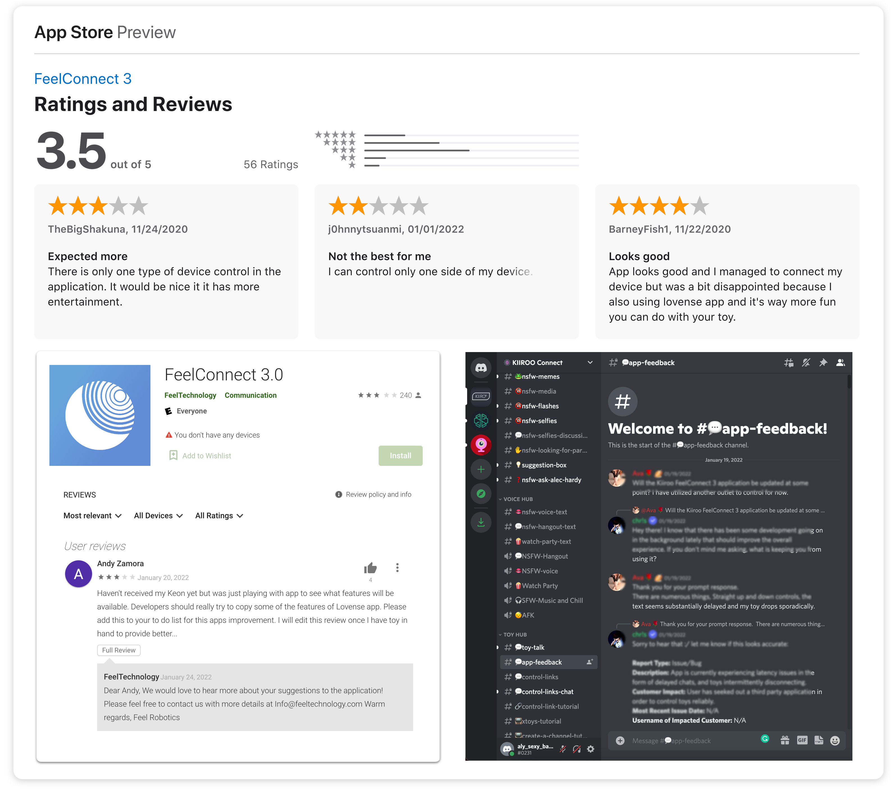
Empathy map
From feedback to a clearer picture of user needs.
I used insights from user interviews to map users' thoughts, behaviours, needs and concerns.
- Slides the controller and keeps looking at the device.
- Checks if the device is on.
- “Should I connect the device every time?”
- “It's too light when I use it at night.”
- Confused and unsure where to start.
- Worried that smart devices are hard to use.
Key findings
01
Users found everyday tasks too complicated.
02
There was strong interest in sharing device control with other users.
03
Device onboarding was a significant source of friction.
04
Users wanted different ways to control connected devices.
05
User retention was low, creating a need for a more engaging product experience.
02 · Define
Reorganising the product around user needs.
Based on interviews and the online survey, I worked with the Product Owner and Communications Manager to rethink navigation, group existing features and identify new functionality.
I used card sorting to organise insights from interviews and define a clearer information architecture for different user types and tasks.

Competitive benchmarking
Competitive benchmarking was used to evaluate the product within its industry and identify relevant patterns from direct and indirectly related products.
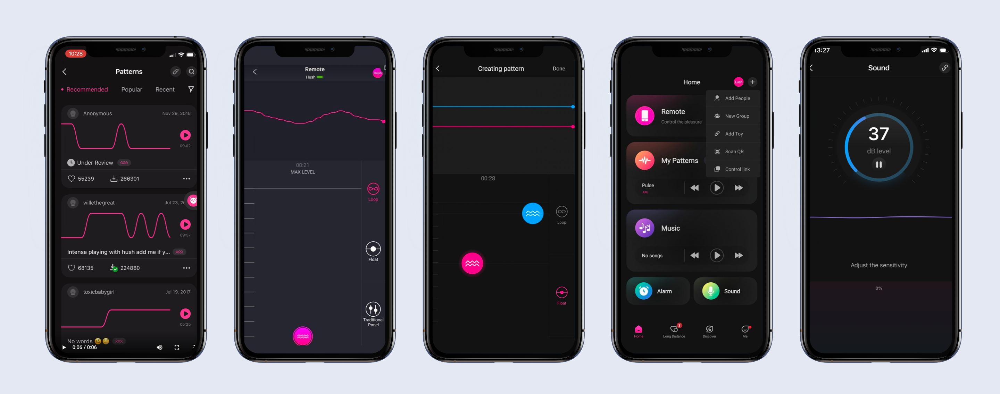
03 · Design
Four areas of the experience needed improvement.
The proposed solutions focused on navigation, device control, visual design and the connection experience.
01
Update main navigation
Reorganise top-level navigation so users can quickly access destinations and move between grouped functionality.
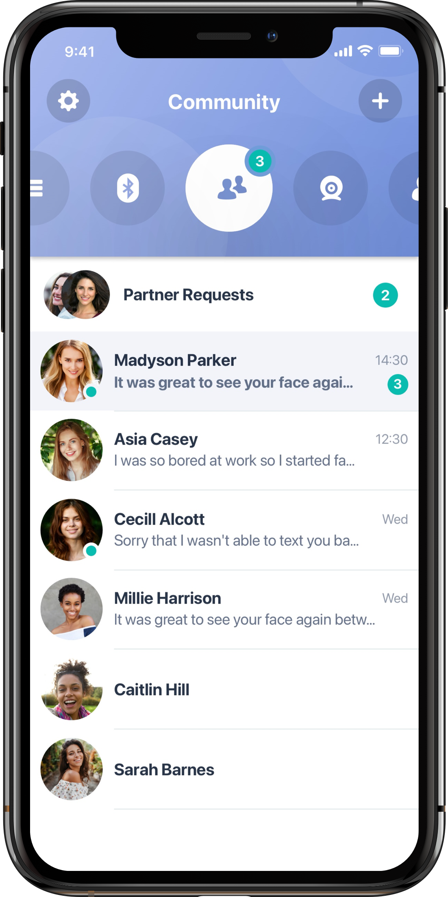
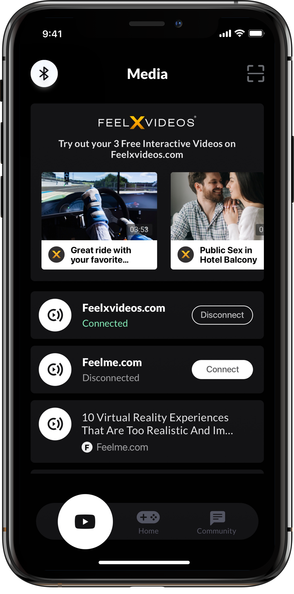
02
Add more ways to control connected devices
Expand the available control methods to make the experience more flexible and engaging.

03
Update the UI
Create a clearer and more engaging interface to support discoverability, engagement and retention.

04
Improve device connection
Show all Bluetooth-enabled devices in range and clearly indicate when a device is not supported, reducing confusion during connection.


User flow
Mapping the different ways users could control a device.
I created the user flow to show the possible paths through device control and clarify how the updated navigation should work.
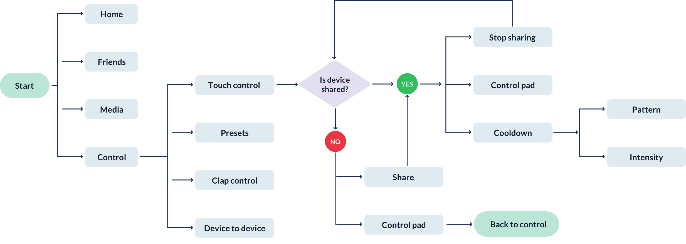
04 · Prototype & UI
Testing the new direction before finalising the interface.
The prototype was prepared as a low-fidelity design and tested within the team and with three users of the existing application. The navigation was also updated based on the findings.
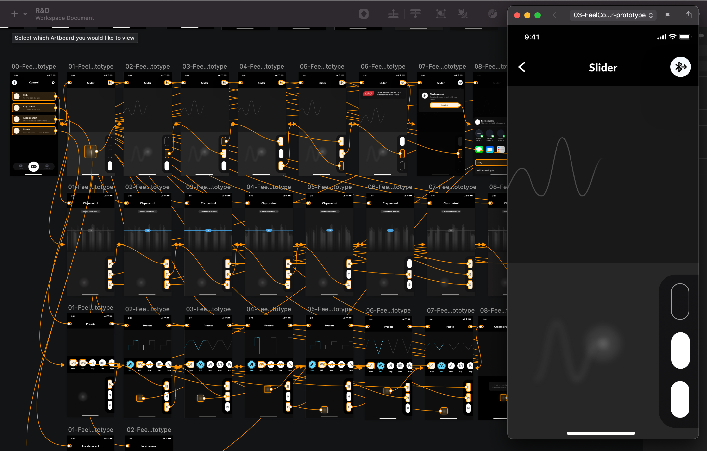
Updated UI

Visual system
Building a consistent visual language.
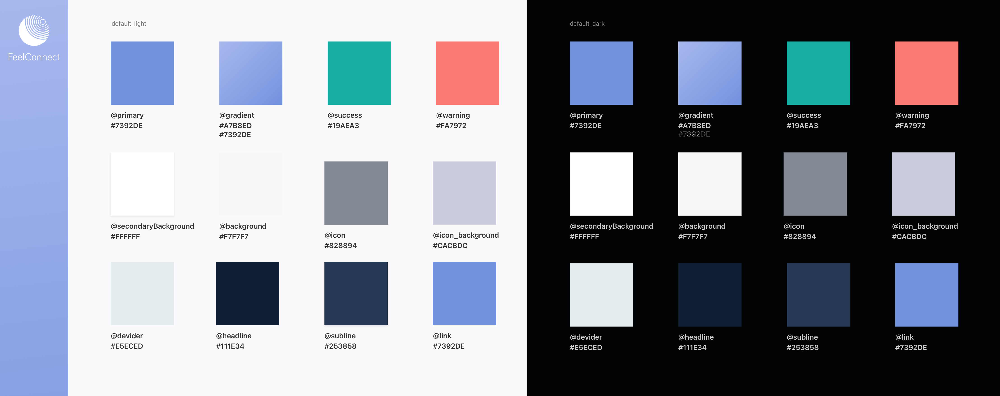
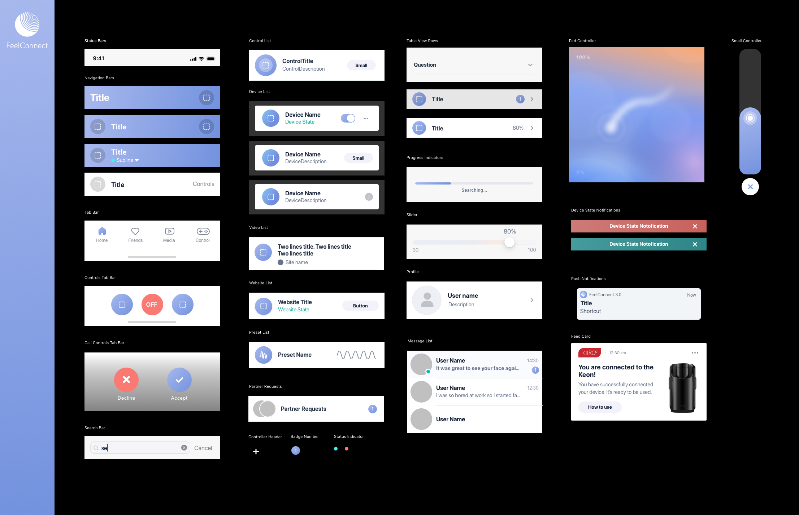
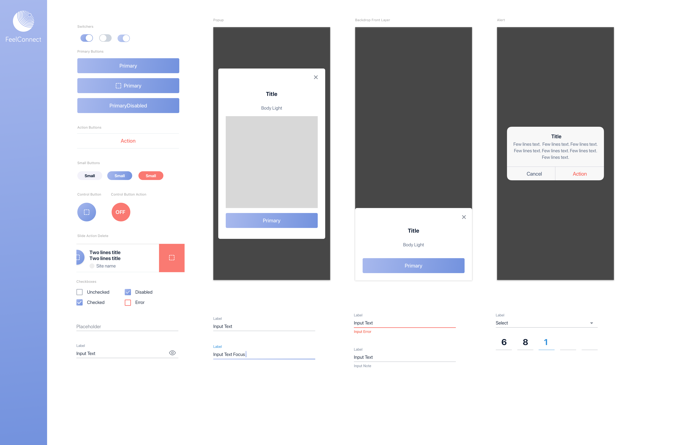
05 · Test & measure
Usability testing helped validate the new experience.
To check whether the new UX design improved the experience compared with the previous version, we conducted usability testing through video calls with five representative users.
01
The sharing button was not clearly shown.
02
Users were not sure how the cooldown mode worked.
03
Users asked for an option to set the sharing time themselves.
I also worked with social media and customer support feedback to monitor complaints, recommendations and reactions to new features.
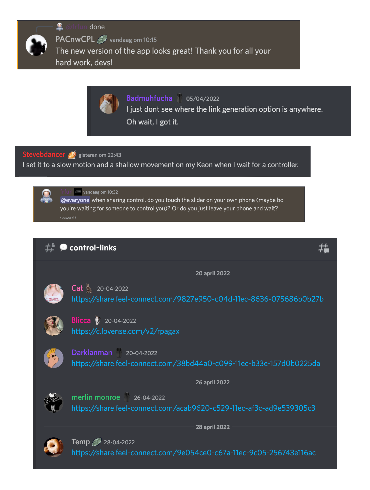
Success metrics
Measuring whether the product was becoming easier and more engaging to use.
I defined monitoring metrics to analyse user pain points and evaluate the effectiveness of app updates.
Customer satisfaction
3.5 → 3.9
Rating improved by 0.4 after launching a new version.
Average session length
7:05 → 18:17
Average session length improved by 11 min 12 sec.
User retention
19k → 26k
Retention increased by 26.9%.
Average purchase revenue
$14 → $24
Average revenue per user improved by 71%.
Usability testing also tracked completion rate, error rate, average number of errors and time on task, alongside engagement, abandonment, active users and conversion.
FeelConnect App
From a feature-heavy product to a clearer, more user-centred experience.
The project combined research, information architecture, interaction design, visual design and usability testing to simplify how users connect and control their devices.